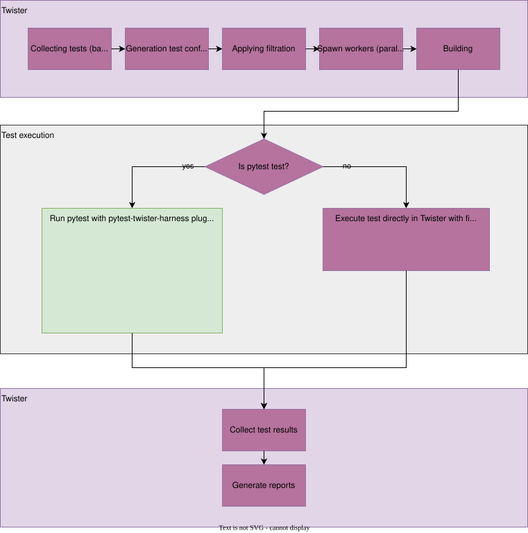

与 pytest 测试框架集成
请注意，twister 与 pytest 的集成仍在开发中，pytest 尚未支持所有平台类型。如果你发现集成方面的问题或有改进想法，请告诉我们，并提交 GitHub issue/enhancement。
简介
Pytest 是一个 Python 框架，它 “让编写小巧、可读的测试变得简单，并且可以扩展以支持应用程序和库的复杂功能测试”（https://docs.pytest.org/en/7.3.x/）。Python 以丰富的免费库和便于编写脚本而著称。此外，pytest 采用了插件和 fixture 的概念，增强了可扩展性和可复用性。为了在 pytest 与 twister 之间实现集成，引入了 pytest 插件 pytest-twister-harness，使 Zephyr 社区能够在以 twister 作为主框架的同时使用 pytest 的功能。
与 twister 集成
默认情况下，无需任何操作即可在 twister 中启用 pytest 支持。该插件作为 Zephyr 代码树的一部分进行开发。为了无需安装即可使用，twister 首先会把该插件的路径添加到 PYTHONPATH 中，然后在调用 pytest 时在命令中追加 -p twister_harness.plugin 参数。如果希望使用已安装版本的插件，必须在调用 twister 时添加 --allow-installed-plugin 标志。
基于 pytest 的测试套件与其他 twister 测试的发现方式相同，即通过是否存在 tests.yaml 文件来判断。该文件中的关键字 harness 告诉 twister 如何处理给定的测试。对于 harness: pytest，twister 的大部分工作流程（测试套件发现、并行化、构建和报告）与其他 harness 相同，区别在于执行步骤。下图给出了该集成的简化概览。

如果使用 harness: pytest，twister 会以子进程方式调用 pytest，将测试执行委托给它。所需的参数（例如构建目录、要使用的设备等）通过 YAML 配置文件传递。pytest 执行完毕后，twister 会查找 pytest 报告（results.xml），并据此设置测试结果。
如何创建 pytest 测试
一个包含 pytest 测试、应用程序源代码和 Twister 配置 .yaml 文件的示例目录结构如下：
test_foo/
├─── pytest/
│ └─── test_foo.py
├─── src/
│ └─── main.c
├─── CMakeList.txt
├─── prj.conf
└─── testcase.yaml
samples/subsys/testsuite/pytest/shell/pytest/test_shell.py 中给出了一个 pytest 测试示例。Twister 根据 testcase.yaml 文件中提供的配置从 src 构建应用程序；如果该 .yaml 文件包含 harness: pytest 条目，Twister 就会在单独的子进程中调用 pytest。示例配置文件如下：
tests:
some.foo.test:
harness: pytest
tags: foo
默认情况下，pytest 会在与二进制源码目录相邻的 pytest 目录中查找测试。可以在 .yaml 文件的 harness_config 部分中使用关键字 pytest_root 指向其他文件、目录或子测试（详见 此处）。
Pytest 会按照其默认的 发现规则 扫描给定位置以查找测试。
传递额外参数
有两种方式可以向被调用的 pytest 子进程传递额外参数：
在 .yaml 文件中，使用位于
harness_config部分的pytest_args，详见 此处。通过 Twister 命令行接口的
--pytest-args参数。当需要从测试套件中选择特定测试用例时，这种方式尤其有用。例如，可以使用以下命令：$ west twister --platform native_sim -T samples/subsys/testsuite/pytest/shell \ -s samples/subsys/testsuite/pytest/shell/sample.pytest.shell \ --pytest-args='-k test_shell_print_version'
命令行参数会扩展 .yaml 文件中的参数。如果两处都有相同的参数，则以命令行中的为准。
Fixture
dut
提供对 DeviceAdapter 类型对象的访问，该对象表示被测设备（DUT）。该 fixture 是 pytest harness 插件的核心，启动 DUT（初始化日志、烧录设备、连接串口等）时需要用到它。该 fixture 会产出一个按所请求类型（native、qemu、hardware 等）准备好的设备。所有类型的设备共享同一套 API，因此可以编写与设备类型无关的测试。该 fixture 的作用范围由 harness_config 部分中的关键字 pytest_dut_scope 决定（详见 此处）。
from twister_harness import DeviceAdapter
def test_sample(dut: DeviceAdapter):
dut.readlines_until(regex='Hello world')
shell
提供一个 Shell 类对象，其方法用于与 shell 应用程序交互。它会调用 wait_for_promt 方法，确保在 DUT 就绪之前不会开始执行场景。shell fixture 会调用 dut fixture，因此可以访问后者的所有方法。shell fixture 增加了针对 shell 交互优化的方法，在测试中可以代替 dut 使用。该 fixture 的作用范围由 harness_config 部分中的关键字 pytest_dut_scope 决定（详见 此处）。
from twister_harness import Shell
def test_shell(shell: Shell):
shell.exec_command('help')
mcumgr
一个示例 fixture，封装了用于管理远程设备的 mcumgr 命令行工具。有关 MCUmgr 的更多信息请参阅 MCUmgr。
备注
该 fixture 要求系统 PATH 中可以找到 mcumgr
该 fixture 只封装了 MCUmgr 的部分功能。例如，下面是一个使用 mcumgr fixture 的测试
from twister_harness import DeviceAdapter, Shell, McuMgr
def test_upgrade(dut: DeviceAdapter, shell: Shell, mcumgr: McuMgr):
# free the serial port for mcumgr
dut.disconnect()
# upload the signed image
mcumgr.image_upload('path/to/zephyr.signed.bin')
# obtain the hash of uploaded image from the device
second_hash = mcumgr.get_hash_to_test()
# test a new upgrade image
mcumgr.image_test(second_hash)
# reset the device remotely
mcumgr.reset_device()
# continue test scenario, check version etc.
unlaunched_dut
与 dut fixture 类似，但不会初始化设备。适用于需要更精细地控制构建过程的场合。此时由测试负责初始化设备。
from twister_harness import DeviceAdapter
def test_sample(unlaunched_dut: DeviceAdapter):
unlaunched_dut.launch()
unlaunched_dut.readlines_until(regex='Hello world')
多 DUT 场景的 fixture
多 DUT fixture 与单 DUT fixture（unlaunched_dut、dut、shell）一一对应，但操作的是设备列表。它们同时适用于硬件和 native_sim 目标，不支持 QEMU。它们要求 twister_pytest_config.yaml 中存在 duts 条目。Twister 会自动生成该文件（对于仿真目标，会创建占位 DUT 条目，因此无需硬件映射），然后调用 pytest。在不使用 Twister 的情况下手动重新运行 pytest 时（参见常见问题），会复用同一个配置文件。配置详情请参见 Twister 文档中的 多 DUT 测试支持 一节。
unlaunched_duts
与 unlaunched_dut 类似，但返回一个 DeviceAdapter 对象列表，每个预留的 DUT 对应一个对象，其日志文件已初始化，但设备尚未启动。
from twister_harness import DeviceAdapter
def test_sample(unlaunched_duts: list[DeviceAdapter]):
for dut in unlaunched_duts:
dut.launch()
unlaunched_duts[0].readlines_until(regex='Hello world')
duts
与 dut 类似，但返回一个已启动的 DeviceAdapter 对象列表。所有设备会并发烧录，以缩短准备时间。如果需要依次烧录，请在 conftest.py 中覆盖该 fixture。
from twister_harness import DeviceAdapter
def test_sample(duts: list[DeviceAdapter]):
assert len(duts) > 1
duts[0].readlines_until(regex='Hello world')
duts[1].readlines_until(regex='Hello world')
shells
与 shell 类似，但返回一个 Shell 对象列表，每个预留的 DUT 对应一个对象，且每个对象都已在等待 shell 提示符。
from twister_harness import Shell
def test_sample(shells: list[Shell]):
assert len(shells) > 1
shells[0].exec_command('help')
shells[1].exec_command('help')
类
DeviceAdapter
- class twister_harness.DeviceAdapter(device_config: DeviceConfig)
该类为测试中使用的所有设备类型（硬件、模拟器、QEMU）定义了统一接口，用于收集设备输出并向设备发送数据。
- launch() None
在目标设备上启动测试应用程序。
该方法执行完整的设备初始化流程：
关闭之前正在运行的应用程序（清理）
如果尚未设置执行命令，则生成该命令
将额外的测试参数添加到命令中
启动读取线程以捕获设备输出
启动应用程序（硬件设备为烧录，模拟器为执行）
启动过程因设备类型而异：
硬件设备：烧录应用程序并建立串口通信。根据设备配置，可能在烧录之前或之后建立连接。
QEMU/模拟器：启动子进程并建立 FIFO/管道通信
原生模拟器：执行二进制文件并通过进程管道连接
- readline(connection_index: int = 0, **kwargs) str
从设备输出中读取一行。
- 参数:
connection_index -- 要读取的连接端口（0 = 主 UART，1 = 第二个核，依此类推）
kwargs -- 其他关键字参数（timeout、print_output）
- 返回:
不含末尾换行符的单行文本
- readlines_until(connection_index: int = 0, **kwargs) list[str]
从设备输出中读取行，直到满足特定条件。
该方法提供了灵活的设备输出收集方式：等待特定模式出现、收集固定行数，或获取当前所有可用的行。
- 参数:
connection_index -- 要读取的连接/端口索引（默认为 0）。对于硬件设备：0 = 主 UART，1 = 第二个核的 UART，依此类推。对于 QEMU 和 native：始终使用 0（只有一个连接可用）
kwargs -- 传递给底层连接的关键字参数，包括： - regex - 要搜索的正则表达式模式 - num_of_lines - 要读取的确切行数 - timeout - 最长等待时间，单位为秒（未提供时使用 base_timeout） - print_output - 是否在读取每一行时将其记录到日志（默认为 True）
- 返回:
不含末尾换行符的输出行列表
- 抛出:
AssertionError -- 在满足条件之前超时
Shell
- class twister_harness.Shell(device: DeviceAdapter, prompt: str = 'uart:~$', timeout: float | None = None)
辅助类，提供与 shell 应用程序交互的方法。
- exec_command(command: str, timeout: float | None = None, print_output: bool = True, *, get_full_output: bool = False, full_output_timeout: float | None = None) list[str]
向设备发送 shell 命令并返回响应。传入的命令会在末尾追加两个回车符：第一个用于在设备上执行该命令，第二个用于接收下一个提示符，以此作为执行完成的信号。该方法返回所执行命令的输出。
- 参数:
get_full_output -- 如果为 True，在看到 shell 提示符后，会继续读取行，直到
full_output_timeout（挂钟时间）耗尽。适用于提示符出现后仍有输出（例如解码后的日志）持续到达的情况。full_output_timeout -- 在提示符之后继续读取额外行所花费的秒数。当
get_full_output为 True 且省略此参数时，使用timeout（或base_timeout）。
- wait_for_prompt(timeout: float | None = None) bool
每隔 0.5 秒向设备发送一次 "enter" 命令，直到出现 shell 提示符（返回 True）或超时（返回 False）。
- get_filtered_output(command_lines: list[str]) list[str]
过滤掉提示符和日志消息
获取 exec_command 的输出（其中可能包含日志消息和命令提示符），并对其进行过滤，只保留命令本身的输出。
- 示例：
>>> # equivalent to `lines = shell.exec_command("kernel version")` >>> lines = [ >>> 'uart:~$', # filter prompts >>> 'Zephyr version 3.6.0', # keep this line >>> 'uart:~$ <dbg> debug message' # filter log messages >>> ] >>> filtered_output = shell.get_filtered_output(output) >>> filtered_output ['Zephyr version 3.6.0']
- 参数:
command_lines -- 字符串列表，即 exec_command 的输出。
- 返回:
字符串列表，其中不包含提示符和日志消息。
Zephyr 项目中的 pytest 测试示例
MCUmgr 测试 - tests/boot/with_mcumgr
LwM2M 测试 - tests/net/lib/lwm2m/interop
GDB stub 测试 - tests/subsys/debug/gdbstub
常见问题
如何在每个 pytest 会话中只烧录/运行一次应用程序？
dut是负责烧录/运行应用程序的 fixture，其作用范围默认为function。可以在 .yaml 文件的harness_config部分中添加关键字pytest_dut_scope来更改：harness: pytest harness_config: pytest_dut_scope: session更多信息请参阅 此处。
如何只运行 Python 文件中的某个特定测试？
有多种方法可以做到。在 .yaml 文件中，可以在
harness_config下添加pytest_root条目，列出需要运行的测试：harness: pytest harness_config: pytest_root: - "pytest/test_shell.py::test_shell_print_help"也可以使用 pytest 的
-k选项选择特定测试（有关 pytest 关键字过滤器的更多信息请参阅 此处）。可以在 .yaml 文件的pytest_args中添加-k过滤器：harness: pytest harness_config: pytest_args: - "-k test_shell_print_help"或者将其添加到 Twister 命令中，以覆盖 .yaml 文件中的参数：
$ west twister ... --pytest-args='-k test_shell_print_help'
如何在测试中获取所使用的设备类型信息？
可以从
dutfixture（表示 DeviceAdapter 对象）中获取：device_type: str = dut.device_config.type if device_type == 'hardware': ... elif device_type == 'native': ...
如何在本地重新运行 pytest 测试，而不让 Twister 重新构建应用程序？
可以在 Twister 命令中添加
--test-only参数再次运行 Twister。另一种方法是以最高详细级别（-vv）运行 Twister，然后从日志中复制用于启动 pytest 的命令（以Running pytest command: ...开头的日志）。首先，使用 Twister 运行场景：
$ west twister -vv -ll debug -T samples/subsys/testsuite/pytest/shell \ -s sample.pytest.shell --device-testing -p nrf54l15dk/nrf54l15/cpuapp --device-serial \ /dev/ttyACM1 --west-flash=--eraseTwister 会在构建目录中自动生成配置文件
twister_pytest_config.yaml，其中包含设备配置等所有测试参数。然后，如果尚未设置 PYTHONPATH 环境变量，请导出它：
$ export PYTHONPATH=$ZEPHYR_BASE/scripts/pylib/pytest-twister-harness/src最后，运行 pytest 命令：
$ pytest -s -v -p twister_harness.plugin \ --twister-config=twister-out/.../sample.pytest.shell/twister_pytest_config.yaml \ samples/subsys/testsuite/pytest/shell/pytest
能否并行运行 pytest 测试？
pytest-harness-plugin在编写时并未考虑并行运行 pytest 测试，尤其是针对硬件的测试。其设计假设是由 Twister 负责测试的并行化，并负责管理可用资源（作业和硬件）。如果出于某些原因确实需要并行运行（例如通过 pytest-xdist 插件），风险由使用者自行承担。
限制
该插件（目前）尚不支持所有平台类型。